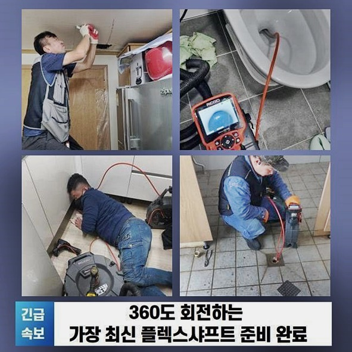
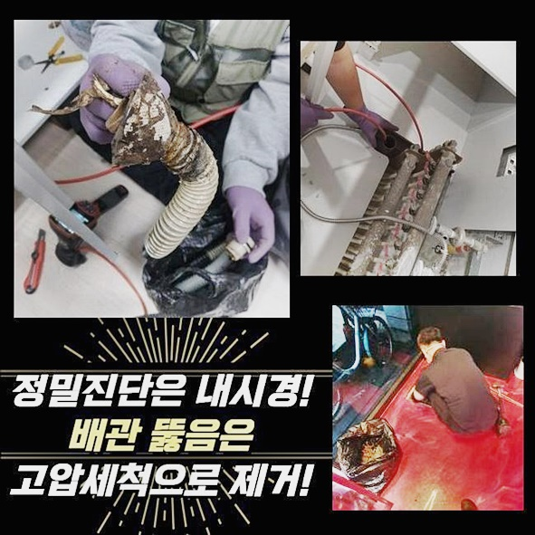
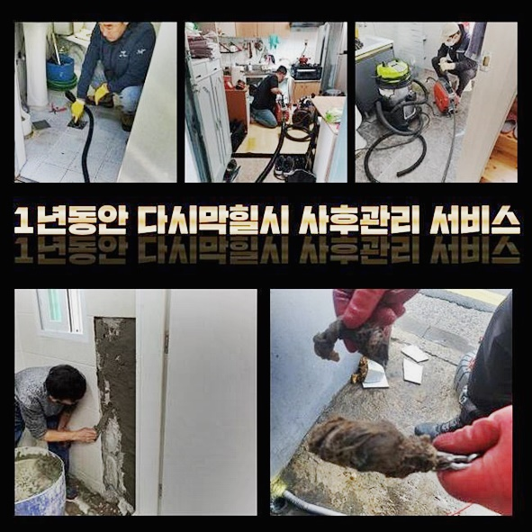
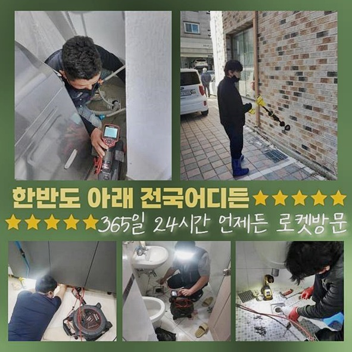
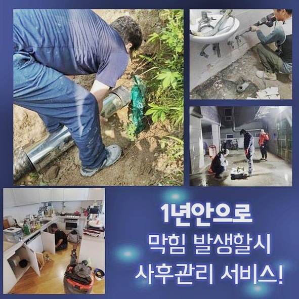
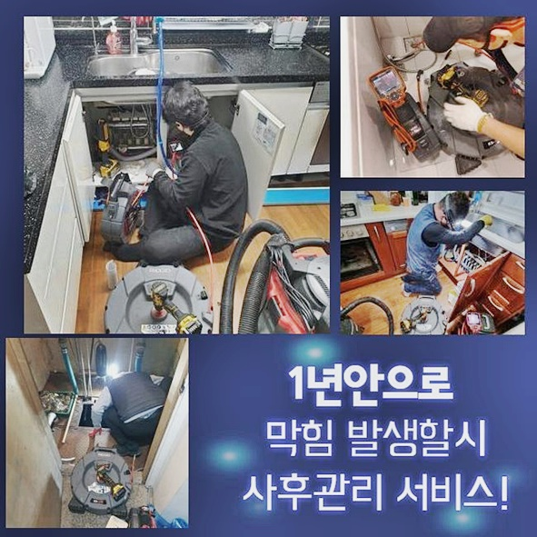
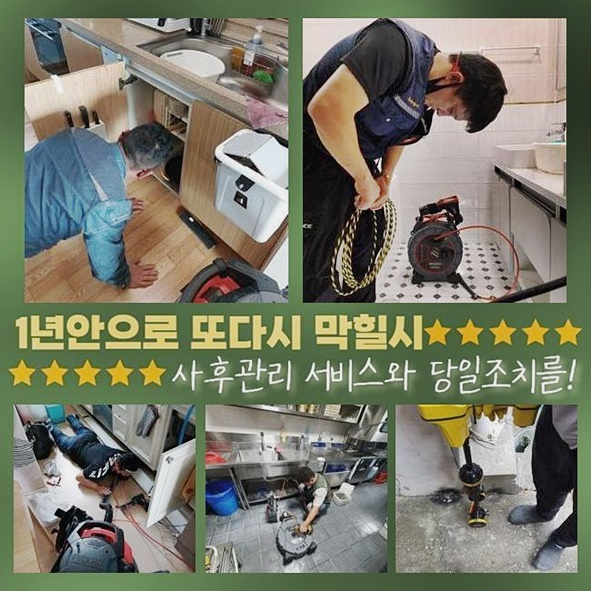

🏠 남양주 도농동싱크대배수관역류 화도읍 집수정청소
용인시 처인구 배관막힘 전문 시공 후기

📋 작업 개요
- 위치: 용인시 처인구, 수원시 영통구, 화성시 동탄
- 서비스 유형: 배관막힘, 고압세척, 내시경점검
- 작업 일시:
- 업체명: 하수구수사대 (010-5615-2118)
🔍 문제 상황
남양주 도농동싱크대배수관역류 화도읍 집수정청소
여러분 주목해주십시오 배관청소에 대한 이야기를 해드릴게요
배관은 탁수가 빠져나가는 길목이며 홀의 단면이 비좁게 형성되어 있어요
청결한 액체만 들어간다면 정체가 발생하지는 않겠으나 혹여나 이물들이 혼합되면 갑갑한 파이프를 목도하는 경우가 많아요
특별히 생선 뼈나 기름때 등 여러 슬러지들이 들어가게 되면 파이프가 차단되곤 합니다 이러면 자기 힘으로 수선하기 어려운 순간이 대부분이죠
안에서 벌어진 일은 바깥쪽에서 인식하기 힘겨운데요 잔재들이 쌓여 겉면에 보일 때까진 간파해내기 힘겨워요
여러 가지의 식재료를 사용하는 주방의 경우엔 상시적인 청소가 없다면 물이 느리게 빠지거나 정체되는 상황이 빈번하게 발현되는데요
가끔 음식물의 기름성분이 모이게 되면 뜨거운 물만으로는 해결이 힘들죠
이럴 땐 배관청소를 주업으로 하는 숙련가에게 문의해서 조력을 받으셔야 합니다
저희는 급작스런 배관고장으로 생활에 어려움을 겪고 계신 의뢰자님께서 긴박한 해소를 바라셨기에 좀더 서둘러서 들어갔는데요
고객님의 예약에 반응하여 처소에 당도하면 우리는 풍부한 경험과 제반 설비를 활용해서 배관을 재신속히 고칩니다
외출에서 돌아 온 뒤 편하게 휴식을 취하는 중에 갑자기 화장실 배수문이 막혀 전화하셨다고 합니다
보편적으로 배관이 차단되면 집안의 도구로 처리를 시도하곤 하죠
배수구 세정제를 쓰거나 베이킹소다와 같은 것을 활용하게 되는데요 그렇지마는 배관면이 훼손될 수 있기에 지양하셔야 해요

🔎 원인 분석
💡 전문가 진단: 정밀 진단 장비를 사용하여 슬러지의 고착 여부를 판명하고 타격/세척 작업을 실시했습니다.
배수관은 우리의 예상과 달리 그리 견고하지 않아서 이차적인 충격으로 물이 새나갈 수 있습니다
여러가지 방책을 써서 복구하는 것을 도전하시다 잘 수선되지 않았기에 배관뚫음을 제대로 하는 곳을 수소문하셨다고 합니다
갑작스럽게 고장이 난 이유가 뭔지 이유 분석에 노력을 기울여야 할 것입니다 우린 기기들을 갖추고 막힘이 발현된 곳에 도달했어요
상황에 따라서 소제 영역이 상이해질 수 있으며 가동하는 공구들도 달라지기도 해요
전문인은 이유를 찾아내고 적절한 대책을 세울 수 있어야 합니다
또한 본시공을 실시하기 이전에 구조적인 측면을 간파할 수 있어야 한답니다
상황에 따라 우선 흡입기를 작동시켜 배수문 근처의 노폐물을 제거하고 배관전용CCTV를 투입해서 하수관을 진단하는 케이스도 있어요
막힘이 일어난 곳을 둘러보니 수돗물이 흘러넘쳐 바닥이 젖은 걸 알게 되었어요
상황이 이렇게 되니 상당히 안타깝다고 느껴졌답니다 훼손된 모습을 확인하니 전반적인 재시공이 필요해 보였어요 오취도 포착되었어요
보는 것처럼 셀프로 시도해보다가 잘못되어 방치하게 되면 막대한 경제적 피해를 가져오기도 하기 때문에 초창기에 신속히 고치는 게 알맞습니다
배수문의 상황을 지켜보니 이물이 워낙 많아 내시경cctv를 넣기가 곤란해서 우선하여 석션장비로 잔재들을 세척하기로 했어요
보편적인 뚫음 기기로 관통장비가 있으나 역류까지 일어났을 땐 침전물이 장애가 되기에 석션장비를 써야 합니다
강력한 힘을 바탕으로 소제하기에 노폐물이 집중된 곳에 올바르게 겨누어야 합니다
이 기기로 겉 부분을 처치하고 촬영기기를 진입시켜 검진을 했어요
내시경설비는 후미진 배수관 안을 즉시 확인케 해준답니다

🔧 작업 과정
까닭과 막혀버린 장소를 알아내는데 커다란 조력을 해줍니다
해당 기기가 들어가서 내부를 들여다보니 큰 유분덩어리들이 단단해져 있었어요
찌꺼기들이 엉켜서 배수관 곳곳에 침체되어서 길목이 작아져서 수돗물이 못빠지고 밖으로 유출까지 된 것이에요
무심코 흘려보냈던 유분이 이유였어요
배관은 여러 오수가 유입되기에 물에 녹지 않는 성분도 수용할 수밖에 없답니다
그러므로 찌꺼기들이 수 개월 적층을 이루어 배수관을 막아버리는 상황이 곧잘 생겨요
평상적으로 말썽을 방지하기 위해 온수를 가득 받아서 이상은 없는지 테스트를 해보시는 것을 추천해요
하수구에 유분 덩어리들이 체류하였기에 전문가용 장비를 바탕으로 처리하기로 했죠
파쇄와 관류유도 설비를 이용해서 배수관 소제를 실시하였죠
플렉스샤프트 기계는 관벽에 고정된 잔재들을 소멸시키고 강력히 고정되어 있는 상황에서도 활용할 수 있답니다
고속 드릴을 활용해서 세척하는 것이기에 장시간 체류했던 이물들까지도 명확하게 소멸시킬 수가 있는거죠
그렇긴하지만 파워가 세기에 일반인이 시도하면 관의 손상을 일으킬 수 있답니다
그렇기에 기술장비를 활용할 시엔 숙련가가 이끌어야 해요
플렉스샤프트 기계로 이물들을 잘게 갈아내는 중이랍니다
파이프의 일부분에만 찌꺼기들이 누적된 상태였고 인접 장소는 별문제가 없어서 생각보다 하수관 뚫음 시공을 재민첩하게 진행시킬 수 있었죠
계속적으로 내시경카메라로 배관 안을 탐지하며 기기를 돌려 이물들을 세척해 나갔더니 점차 청결해지는 게 관찰되었죠
잘 뚫렸는지 확인하려고 배관카메라를 넣어 보았어요
브라운관을 통해 관찰하니 이전까지 배관안을 메웠던 침전물들이 이젠 소멸되어 깨끗한 배수관 내측을 볼 수 있었지요
마무리 공정으로 물빠짐은 원활한지 점검에 들어갑니다
단번에 20리터 이상을 쏟아부었는데 속시원히 소멸되는 걸 알게 되었어요
싱크대 아랫쪽의 역류가 생겨났던 자리도 보아 가며 진단을 하였던 건데 문제없이 제대로 빠지는 걸 확인하고 마무리하게 되었어요
테스트할 때는 손님분에게 뚫음이 완료됐다는 걸 바로 볼 수 있도록 조치했답니다
저희의 이번 작업에서 목도하신 것처럼 배관차단으로 역류까지 생기는 증세 대개가 관 내측이 고장난 것이 원인이라 알려드릴 수 있겠습니다


✅ 작업 완료
물흐름 차단 등은 회피하기 힘겨운 고장이랍니다
이와 유사한 장애가 발발하면 곧바로 권위자의 손길에 의해서 조치를 받아보셔야 합니다
그래야만 과도한 금전 손실을 예방할 수 있는 거죠
별나게 유분덩이들로 갑갑하게 차단되었다면 관련 기능을 가진 전문인에게 전화하여 관 내부를 클리닝 해 보실 것을 권해 드립니다
금전적인 내용도 고려한 방안이라고 자신합니다
시간에 상관없이 전화주시면 민첩하게 내방하도록 할게요




⚠️ 하수구 배관 막힘 예방 및 관리 가이드
- ✅ 머리카락, 비닐, 물티슈 등 물에 분해되지 않는 이물질은 절대 흘려보내지 마세요.
- ✅ 기름기 많은 식기는 설거지 전 키친타올로 먼저 기름때를 닦아내세요.
- ✅ 주기적으로 배수구에 뜨거운 물을 가득 부어주어 유지방 고착을 방지하세요.
- ✅ 작업 후 1년 이내 재발 시 무상 A/S 보증 서비스를 제공합니다.
💡 핵심 정리
- 확실한 장비 작업(내시경 점검 및 샤프트 스케일링)으로 원인을 뿌리 뽑습니다.
- 작업 후 1년 이내에 동일한 부위 재발 시 100% 무상 A/S 서비스를 보장합니다.
- 서울 · 경기 · 인천 전 지역에 24시간 언제든 긴급 출동할 수 있도록 항시 대기 중입니다.
❓ 자주 묻는 질문 (FAQ)
🚨 용인시 처인구 배관막힘 문제로 고민이신가요?
정확한 원인 진단과 확실한 시공으로 재발 없는 해결을 약속드립니다.
24시간 긴급 출동 | 서울 · 경기 · 인천 전지역 | 1년 내 재발 시 무상 A/S